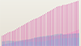

All
Lines
Horizons
Areas
Stacked Area
Streamgraph
Overlapping Area 
Grouped Bar
Stacked Bar
The court cases we hear about most often involve something extreme, but what is the usual, day-to-day business of the courts? We have put together a series of interactive views designed to give you a look under the hood of a large state judicial system you may have heard about, the Florida courts.
We hope to shed light on questions about the structure of the court system, the volume and type of cases it handles, and how the cases are resolved. For all of these questions, the answers can vary over time, over geography and over the types of events and resolutions being examined.
The opening view is anchored on the domain expert of the data, Judge Stephens. His opening video orients and anchors the viewer to the data landscape and directs the users attention to the interesting questions presented by the data. Eye-catching force node buttons present data views that illustrate key narratives, such as the hypothesis that case filings are driven by population growth and economic conditions.
Once the video is complete the user can appreciate an unobstructed view of the opening animation. This kinetic presentation functions as a teaser and gives an overview of the changes in case filings and dispositions over time, classified by the type of case. Since population growth and economic activity are believed to influence court caseloads, the display also shows economic and demographic data for the same timeframe.
This display initially features an animated tour of the different forms of vizualization available for the various data elements; you can select a single form and focus on the time path of a specific data item, or in some cases two items displayed together.
The second view is descriptive. It shows how case filings and resolutions can vary over time in different geographic areas. The map of Florida visualizes the structure of the state courts system and permits the user to compare filng data and detailed resolution data. You can choose to make comparisons at the county level, or to aggregate by circuit (a grouping of counties) or district (a grouping of circuits). Making one selection compares the selected region to statewide averages, and a second selection compares that region to the first one. The comparisons of disposition are further broken down into the type of disposition- whether the case was resolved by jury trial, by pretrial rulings, or by settlement. This does not try to include who won or lost, since that is only meaningful relative to the parties' negotiations which take place privately.
References and Sources
Case filings and dispositions. Data provided upon request by State of Florida Office of State Courts Administrator from OSCA's Summary Reporting System.
Population Size and Caseload are Often Related National Center for State Courts.
National Trend declining case filings. Examining the Work of State Courts, National Center for State Courts (2012) (using 2010 data)